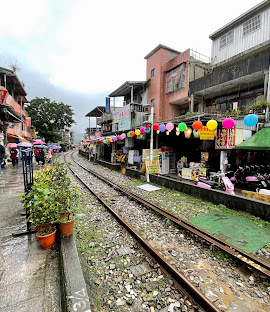

Dalam tugas edutrip Taiwan, kita harus wawancara orang di dalam destinasi kita
Tugas IPS
Tradisi di Shinfen Old Street adalah setiap habis 2 minggu imlek, mereka akan menulis harapan dan wishnya didalam lanterna dan lanterna ini akan dilepas ke langit